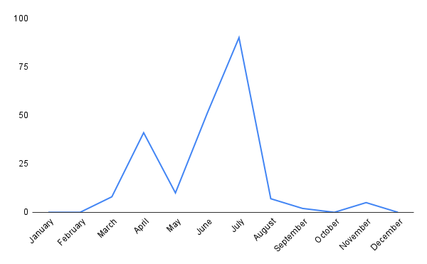

Melissodes apicatus

Scientific Classification
Kingdom
Phylum
Class
Order
Family
Tribe
Genus
Subgenus
Species
Binomial Name
Melissodes apicatus
Melissodes apicatus Lovell and Cockerell, the pickerelweed long-horned bee, is a specialized and geographically limited rare species of Nearctic bee (Laberge, 1956). Like all Melissodes, male M. apicatus have long antennae, and the females have short antennae in comparison (see "Genus" page for more information). This species resides in the subgenus M. (Apomelissodes) Laberge. Both sexes of M. apicatus are distinct from other M. (Apomelissodes) Laberge, and the females can be easily distinguished by their more prominent clypeal protrusion, long and abundant hooked hairs on the galea, short galea, distal white bands of the tergites reaching the apex across the entire tergum, and relatively weakly branched hairs on the scopa (Laberge, 1956). Males can be distinguished from that of other M. (Apomelissodes) Laberge by their long and abundant straight short hairs on the galea, short galea, distinctive pygidial plate (treated more thoroughly in “Description and Identification”), distal white bands of the tergites reaching the apex across the entire tergum, and the black clypeus with a large yellow to orange macula that ranges in both size and color (see “Description and Identification” for more information on both sexes) (Laberge, 1956). M. apicatus is seemingly an oligolege of the genus Pontederia (Laberge, 1956), however, male M. apicatus have been documented on Melilotus alba and Stachys floridana (Laberge, 1963). These males were most likely foraging for only nectar (Laberge, 1963), and most of the females caught were on Pontederia foraging for pollen and nectar (Laberge, 1963), so the aforementioned assumption of oligolecty toward Pontederia is most likely correct.
Description and Identification
Based on Laberge's (1956) description, Melissodes apicatus are medium sized setacouse bees. Females range from 11 to 14 millimeters in length and 4 to 5.5 millimeters in width (width measured at the widest portion of the metasoma). Males are a bit smaller, being about 10 to 13 millimeters in length and 4 to 5 millimeters in width (width measured at the widest portion of the metasoma). The female's first flagellar segment is on average 1.98 times the size of the second flagellar segment (standard deviation 0.075). The males are the opposite where the second flagellar segment is on average 6.11 times the size of the first flagellar segment (standard deviation 0.118). Female wing length is 21.56 millimeters on average (standard deviation 0.252 millimeters), and male wing length is 21.35 millimeters on average (standard deviation 0.293 millimeters). Females have an average of 13.85 hamuli (standard deviation 0.379), while males have an average of 12.65 (standard deviation 0.215).
Female
According to Laberge (1956), the description of female M. apicatus is as follows: the integument is black, differing at the eyes, which are a gray to bluish gray; the wing membranes, which are slightly to predominantly infumate brown; the wing veins, which are black; the apical half of the mandibles, which are rufescent, and in the median of the apical half, there is a golden macula; the underside of flagellar segments 2-10, which are slightly rufescent; the distitarsi, which is reddish brown; the bastitarsi, which is often reddish brown; the tibia and femora, which are reddish brown; the sterna which is sometimes reddish brown; the tegulae, which are piceous; and the narrow apical portion of the first tergum, which is hyaline. The clypeus protrudes strongly past the eye in profile view. The surface of the clypeus is shiny with no shagreening and has coarse, irregularly sized punctures that are mostly separated by half a puncture diameter or less. The surface of the supraclypeal area is shiny and coarsely punctate. The surface of the flattened lateral areas of the vertex that are positioned medially to the apices of the compound eyes are shiny with no shagreening, and coarsely punctate with large punctures that are mostly separated by less than half a puncture diameter. The surface of the galeae are shiny with no shagreening and have abundant small punctures, predominantly in the lateral areas. The length of the galeae is less than three, but more than two times the length of the length of the clypeus medially. The three maxillary palpal segments decrease in length from basal to distal in a ratio of about 4.0:4.0:2.5; sometimes there is a minute fourth segment. The surface of the mesoscutum is shiny with no shagreening, and the posteromedian area has abundant round punctures that are separated by one and a half to half a puncture diameter. The anterior and peripheral areas of the mesoscutum have the same punctate pattern as the posteromedian area, but the punctures are separated by half a puncture diameter or less. The surface of the scutellum is shiny with no shagreening and has punctures that are approximately the same size as the punctures of the adjacent portion of the mesoscutum. These punctures are separated by half a puncture diameter or less. The surface of the mesepisternum is shiny to moderately shiny and has large shallow punctures that are usually larger that the punctures of the posteromedial area of the mesoscutum. These punctures are mostly separated by less than one-third of a puncture diameter and the surface of the bottom of these punctures are etched with reticular shagreening. The surface of the metanotum is shiny medially and shagreened laterally and has abundant crowded punctures that are prevalent medially and sparser laterally. These punctures are smaller than the medial punctures of the scutum and are separated by half a puncture diameter or less. The propodeum’s dorsal surface is tesselated, matte, dull, and weakly reticulorugose, except for the somewhat smoother median sixth. The posterior surface has sparse punctures, although the broad upper triangle is impunctate and usually moderately shiny.
The surface of the first tergum’s basal three-fifths is moderately shiny with fine transverse shagreening and has small, round, shallow punctures that are separated by one to two puncture diameters in the apical portion of that basal three-fifths. Basally and laterally, these punctures are separated by less than one puncture diameter. The surface of the second tergum is moderately shiny to dull and is transversely and densely shagreened. The punctures of the interband and basal zones of the second tergum are mostly separated by two puncture diameters and somewhat closer laterally. The apical area of the second tergum is impunctate. The third and fourth terga are similar to the second, but have more abundant punctures, especially basally.
M. apicatus has a somewhat small range of setal variation, the most common description of which follows. The hairs on the head are white except for the long abundant black to dark brown hairs on the face that almost reach to the antenna, and the long abundant black to dark brown hairs on the vertex present between the apices of the eyes. The galeae have many long hooked hairs that are particularly abundant laterally (Fig. 1). The mesosoma has white hairs aside from the large dark brown to black patch of hairs on the mesoscutum. This dark patch continues past the anterior margins of the tegulae and usually reaches the pronotum (Fig. 2). The pronotal lobes have abundant long black hairs mixed with pale hairs. The tegulae and humeral angles of the wings have dark brown hairs. The scutellum has dark brown to black hairs, but at edges there are long white hairs (Fig. 3). The first tergum has long white hairs in the basal one-half to three-fifths that extend to the apical margin at extreme lateral areas (Fig. 4). The second tergum’s apical white pubescent band is almost interrupted medially, has several rows of short predominantly plumose hairs, and a sinuate anterior margin. This band reaches the apex across the entire tergum. The basal and apical bands of the second tergum are connected at extreme lateral areas. The interband zone of the second tergum has abundant dark brown bristle-like, erect to suberect hairs. The third and fourth terga have basal bands of brown to black totementum (Fig. 5), and the distal white pubescent band is similar to the second tergum, but it isn’t sinuate anteriorly. The interband zones of the third and fourth terga are the same as the second tergum. The fifth and sixth terga have long black appressed hairs, and the fifth tergum has long white lateral tufts of hair (Fig. 6). The sternal hairs are brown, and at the extreme lateral areas of sterna 2-6 the hairs are usually white. The hairs of the leg are white except for the outer surfaces of the fore tarsi, which are brown; the apices of the fore and middle tibiae, which are brown; the bases of the hind tibiae and basitibial plates, which are brown; the inner surfaces of the tarsi and especially the disitarsi, which are yellow to dark brown; the inner surfaces of the hind bastitarsi, which are usually reddish brown; and the scopa which are pale ochraceous to white and sometimes pale brown on the tibiae. The scopal hairs are plumose, be it weakly, and each one has between one to five, usually three or four, branching hairs on both sides of the rachis. The scopal hairs are more plumose on the basitarsi than they are on the tibiae.

Fig. 1. A labeled diagram showing the lateral galeal hairs of a female M. apicatus

Fig. 3. A labeled diagram showing the hairs of the scutellum of a female M. apicatus

Fig. 4. A labeled diagram showing the white hairs of T1 of a female M. apicatus

Fig. 5. A labeled diagram showing the basal bands of brown to black totementum of T3-4 of a female M. apicatus

Fig. 6. A labeled diagram showing the basal hairs of T5-6 of a female M. apicatus
Male
According to Laberge (1956), the description of male M. apicatus is as follows: the integument is black, differing at the clypeaus, which has a large, irregular, yellow to yellowish orange macula that can range in both shape, size, and color, or be absent entirely (Fig. 7.); the apical half of the mandible, which is rufescent and has a medial golden macula; Flagellar segments 2-11, which are yellowish red beneath and dark brown above; the eyes, which range from violet gray to gray and yellowish green to bluish gray; the distitarsi, which are dark reddish brown; the bastitarsi and tibiae, which are often reddish brown; the femora and coxae, which are usually reddish brown; the wing membranes which are infumate yellowish brown; the wing veins, which are brown to black; and the tegulae, which are piceous. The remainder of the characteristics are the same as the female described above except as follows: the minimum length of the first flagellar segment is about one-sixth the maximum length of the second segment, however, it tends to be less; the first metasomal tergum has punctures that almost reach the apical margin medially; the second, third, fourth, and fifth terga’s surface is shiny to moderately shiny with weak shagreening; the pygidial plate is deeply notched (creating a V shape), and the notch is located about one third of the length of the apical to basal portion of the pygidial plate from the apex. The apical margin of apex of the pygidial plate is upturned, and the apicolateral margin of the basal area is also upturned. This basal area is often slightly higher than the apical margin of the apex, and can create the illusion of two small pygidial plates stacked atop one another.
In his M. apicatus description, Laberge (1956) wrote a comparative treatment of the male terminalia, comparing it to M. fimbriata. However, the only terminalia descriptions for male M. fimbriata are that of figures 111-113 in Laberge (1956b). In this treatment, the male terminalia for M. apicatus will be based on the figures provided in Laberge (1956) that pertain to M. apicatus. The seventh sternum does not narrow into a short neck, but instead is mounted to the rest of the sternum by around seven-eights of the full sternal width. This can create a notch-like structure on the lateral portions of the seventh sternum when looking at it dorsally. There are a few hairs ventrally on the apical half of the seventh sternum. The 8th sternum usually has some short hairs apicomedially, and several short hairs on the apical half ventrally. The gonostylus is broad with a few hairs dorsally and is less than two-thirds the length of the gonocoxite and isn't capitate. The ventral area of the gonostylus has very few short sparse hairs near the base, and no hairs laterally. The penis valve has a prominent dorsolateral lamella; the basal end of the lamella ends in an inflected tooth.
M. apicatus has a somewhat small range of setal variation, the most common description of which follows. The hair is similar to that of the female differing at the vertex, which as few to no brown hairs; the galeae, which have straight abundant hairs that are particularly abundant laterally; the dark patches on the mesoscutum and scutellum, which are usually smaller than the female’s; the pale hairs of the first tergum, which extend, or almost extend, to the apex; the distal pale band of the second tergum, which isn’t interrupted medially, and doesn’t have a sinuate anterior margin; the narrow apical white pubescent bands of terga 2-5, which are approximately equal to one another in their width, and usually stay a consistent width across each of their respective terga; The interband zones of terga 2-5, which have longer and more abundant dark brown bristle like hairs; The sixth and seventh terga, which have long brown hairs; the sternal hairs, which mostly white to ochraceous, darker basally on sterna 2-6, apicolaterally white and predominantly plumose, and ochraceous to reddish brown apicomedially. The legs hairs are white, differing at the inner surfaces of the tarsi, which are brown; the outer surfaces of the hind basitarsi that are below the basitibial plates, which are sometimes brown; the outer surfaces of the tarsi and tibiae, which are sometimes ochraceous, particularly on the hind tibiae.
Location and Habitat
M. apicatus is a rare, localized, and specialized bee (Laberge, 1956). In his treatment, Laberge (1956), noted that this species ranges from Maine to Florida, occurring all along the Atlantic coast. However, a recent checklist shows that M. apicatus occurs in Minnesota, showing that the range of this species is larger than what has been represented in the historical literature (Portman, Z. M. et al., 2023). There have also been reports of this bee in Illinois (Rericha-Anchor, L., 2024) and Michigan (Gibbs, J., 2025), further validating this new found westward range (Fig. 9). The only phenological activity currently published for M. apicatus states that the species has been documented to be active through March 21 to July 21, although peak activity seems to occur from April to May (1956). This activity was only reported for bees residing on the Atlantic coast and could possibly differ for more inland populations.
Fig. 9 Map showing an estimation for the known distribution for M. (Apomelissodes) apicatus. Each point represents 1 or more occurrences; occurrences that don't have coordinates are not included. Data compiled from DiscoverLife (Ascher & Pickering 2025) and GBIF (Secretariat 2023).
Fig. 2 A conceptually similar figure showing the phenological activity of M. apicatus to that illustrated by Wilson & Carril (2016), but was independently redrawn for this study with updated information. The x value is the month, and the y value is the number of documented observations. Data compiled from DiscoverLife (Ascher & Pickering 2025) and GBIF (Secretariat 2023).
Bionomics
M. apicatus is a ground nesting bee that can frequently be observed atop sunflowers (Foy, J. R., 2025) foraging for pollen (females) and nectar (females and males) (Roch, J.C. et al., 2023). In his treatment, Laberge (1961; 1956) stated that Custer (1928) reported observing a female, possibly M. apicatus, entering the same burrow as eight other females of Epimelissodes obliquus (At the time of Laberge, Epimelissodes obliquus was referred to as “Svastra obliqua” and at the time of Custer, Epimelissodes obliquus was referred to as “Melissodes obliqua”). Although this may be true, Custer (1928) only described this female as “another species of the same genus, half as large and covered with light brown hair…” This description could match a number of bees within the genus Melissodes or other Eucerini and the presumption of M. apicatus could be incorrect. Nests of M. apicatus documented in July and August of 1979 were found near Logan, Utah on a farm in a 1-acre plot that was planted with sunflowers (Helianthus annuus variety macrocarpus) and summer squash (Cucurbita pep L.)(Parker, F. D et al., 1981). These nests seemed to appear distributed randomly and were located between, and in, irrigation furrows of sunflowers and zucchini (Parker, F. D et al., 1981). Over 20 nests that were located were found by observing bees emerge or enter their nests, or by finding the tumuli at the entrance of the nests; of the nests found, 6 were excavated for examination (Parker, F. D et al., 1981). The following description of the nest structure is derived from Parker, F. D et al. (1981). The tumuli, when present, measured 5 cm across and 1.5 cm high. The entrance hole measured to be an average of 7 mm in diameter. The main portion of the burrow was usually 7 mm in diameter, smooth but unlined, spiraled down about 4 cm and then descended downward by 12 cm. The lateral burrows, although branches couldn’t be recovered, extended radially from the main burrow by 1-10 cm and each lateral branch seemingly began at different levels. Each nest had between 1 and 27 cells that ranged between the depths of 11-19 cm below the surface, and the average number of cells was 11. In nests with more than one cell, some of the cells were separated by 1 cm below an adjacent cell, implying that some lateral burrows had multiple cells. The brood cells were typically ovoid in shape, vertically oriented, and created by the female packing around 2 mm of soil against the original excavated cavity then lining the inner walls with wax. However, the cell cap, made from rings of soil, did not have wax applied to the inner surface because the cell was closed by the female from the outside. The largest diameter of a cell was 7-8 mm, and each cell was typically 8-14 mm long.
The first bloom of sunflowers seems to be correlated with emergence of M. apicatus (Parker, F. D et al., 1981). On first bloom, M. apicatus have full and unworn setae and wing margins, showing a clear sign of first emergence; this pattern indicates one generation per year (Parker, F. D et al., 1981). According to Parker, F. D et al. (1981), female M. apicatus activity started between 6:30 AM to 7:45 AM (activity may begin earlier with warmer temperatures and more sunlight) in an area around Logan, Utah, and females were most active on flowers in the early parts of the day. Activity may start at different times based on location. At 9:00 AM, there were twice the amount of females foraging than at 11:00 AM, and at 1:00 PM, there was about one-third the amount of females foraging than at 11:00 AM; it seems as if most females stay in their nests during the afternoon (Parker, F. D et al., 1981). The female’s initial foraging trip was always lengthy compared to subsequent foraging trips (Parker, F. D et al., 1981). When returning from shorter trips, females always carried pollen and entered their own nest without hesitation or investigation of other female’s nests; as august progressed, foraging trips lengthened (Parker, F. D et al., 1981). Females caught in storms did not return to their nests until the rain ended (Parker, F. D et al., 1981), which could be one of the reasons why M. apicatus’ phenological cycle is sensitive to precipitation (McLaughlin, et al., 2023). However, after the rain had ceased, females returned to their nests for brief periods of time, and even with heavy cloud cover, they then left for additional foraging trips (Parker, F. D et al., 1981). When returning to their nets from foraging trips, females usually remained in their nests briefly. These brief periods, lasting around 30-150 seconds, were most likely times when nectar and pollen were deposited (Parker, F. D et al., 1981). Brief periods such as these seemed most common, however, on occasion females remained in their nests for 21-41 minutes. In these lengthy periods, females were presumed to be laying eggs, closing cells, and preparing pollen loafs (Parker, F. D et al., 1981). According to Parker, F. D et al. (1981), the two female M. apicatus they recorded had 55 short periods in their nest, and 4 lengthy periods. If each of the lengthy trips corresponds with the completion of cell provisioning, then an estimation of around 14 trips per cell provision can be made (Parker, F. D et al., 1981). M. apicatus seems to have a short foraging range, approximately 16 m (Foy, J. R., 2025), meaning that nests are most often located in, or near, their food and provisioning source. Because of this, females can most likely complete around 1 cell per day (Parker, F. D et al., 1981).
Male M. apicatus were found on sunflower heads on average twice as often as females (Parker, F. D et al., 1981). In the earlier months of peak activity (see Fig. 2), males were the most abundant at 9:00 AM. However, toward late August and early September, when morning temperatures were cooler, males didn’t have a particular time of abundance (Parker, F. D et al., 1981). In the late afternoon or in rough weather, males were found forming sleeping aggregations on opened sunflower heads, most often under the large ray flowers, of 2-20 individuals. Males patrol flowers in search of mates, and by doing so, they also lend a hand in pollination (Parker, F. D et al., 1981). These males seem to carry about as much pollen as a female worker honey bee, and 64% of their visits on flowers last longer than 1 second (Parker, F. D 1981).
M. apicatus is a more proficient pollinator for sunflowers than the western honey bee, able to set 4.9 to 10.9 times as many seeds on male sterile varieties than the western honey bee (Parker, F. D 1981). This is most likely because adult honey bees (Apis mellifera) provisioned with Asteracea pollen as larva, had the highest mortality rate compared to other pollen provisions (Frias, B.E., 2015). Also, honey bees in sunflower fields were shown to prefer male sterile flowers containing no pollen and foraging only for nectar in contrast to male fertile flowers, which M. apicatus prefers (Estravis Barcala, 2019). Parker, F. D. (1981), estimated that the maximum pollen load a female M. apicatus could carry was 330,000 grains of pollen, with an average amount of 104,542 grains. This pollen is then brought back to their nests, and in lengthy periods, combined with nectar to make larval provisions (Parker, F. D et al., 1981). Triepeolus helianthi, a known parasite of M. apicatus, was seen going into a female’s nest on August 2nd 1979 (Parker, F. D et al., 1981). As the female M. apicatus was leaving her nest for a foraging trip, T. helianthi moved toward the female’s nest and entered under 1 second of the female leaving (Parker, F. D et al., 1981). After 90 seconds, T. helianthi exited the nest and flew to a nearby blade of grass (Parker, F. D et al., 1981). From there she stayed for several seconds and then flew away (Parker, F. D et al., 1981). When this particular M. apicatus nest was excavated in September of that same year, two T. helianthi larvae were discovered (Parker, F. D et al., 1981). T. helianthi could possibly be ad efficient as it is in finding M. apicatus nests based on the volatiles emitted from the aforementioned larval provisions (Dötterl, S., 2008).
Flower records
All flower records included in this list are from reports in literature; each flower will have a parenthesized reference listed after it to the literary work it was recorded in. Abutilon theophrasti (Laberge, 1961), Alcea rosea (Laberge, 1961), Arctium sp. (Laberge, 1961), Argemone sp. (Laberge, 1961), Argemone platyceras (Laberge, 1961), Bidens aristosa (Laberge, 1961), Bidens laevis (Laberge, 1961), Blephilia hirsuta (Laberge, 1961), Brassica juncea (Laberge, 1961), Carduus crispus (Laberge, 1961), Carya illinoinensis (Laberge, 1961), Cassia sp. (Laberge, 1961), Centromadia pungens (Laberge, 1961), Chamaecrista fasciculata (Laberge, 1961), Chrysothamnus sp. (Laberge, 1961), Cirsium sp. (Laberge, 1961), Cirsium altissimum (Laberge, 1961), Cirsium discolor (Laberge, 1961), Cirsium undulatum (Laberge, 1961), Cirsium vulgare subsp. vulgare (Laberge, 1961) Clematis sp. (Laberge, 1961), Cleome sp. (Laberge, 1961), Cleome serrulata (Laberge, 1961), Cleomella lutea (Laberge, 1961) Convolvulus sp. (Laberge, 1961), Coreopsis sp. (Laberge, 1961), Coreopsis lanceolata (Laberge, 1961), Coreopsis palmata (Laberge, 1961), Coreopsis tripteris (Laberge, 1961), Cosmos sp. (Laberge, 1961), Dalea candida var. oligophylla (Laberge, 1961), Dalea purpurea (Laberge, 1961), Datura innoxia (Laberge, 1961), Echinacea pallida (Laberge, 1961), Enceliopsis sp. (Laberge, 1961), Engelmannia peristenia (Laberge, 1961), Ericameria palmeri (Laberge, 1961), Eupatorium sp. (Laberge, 1961), Eutrochium purpureum (Laberge, 1961), Eustoma russellianum (Laberge, 1961; although it is referred to as “Eustoma artemifolium” which is possibly a misspelling for “Eustoma grandiflorum”, the now synonymized name), Gaillardia sp. (Laberge, 1961), Gaillardia aristata (Laberge, 1961; although it is referred to as “Gaillardia cristiata” which seems to be a misspelling), Gilia sp. (Laberge, 1961), Glycine max (Wheelock, M.J., 2014) Grindelia sp. (Laberge, 1961), Grindelia squarrosa (Laberge, 1961), Gutierrezia sp. (Laberge, 1961), Gutierrezia sarothrae (Laberge, 1961), Haplopappus sp. (Laberge, 1961), Helenium autumnale (Laberge, 1961), Helenium laciniatum (Laberge, 1961), Helianthus sp. (Laberge, 1961), Helianthus annuus (Laberge, 1961), Helianthus atrorubens (Laberge, 1961), Helianthus bolanderi (Laberge, 1961), Helianthus ciliaris (Laberge, 1961), Helianthus divaricatus (Laberge, 1961), Helianthus grosseserratus (Laberge, 1961), Helianthus × laetiflorus (Laberge, 1961), Helianthus annuus subsp. lenticularis (Laberge, 1961), Helianthus maximiliani (Laberge, 1961; although it is referred to as “Helianthus maximilianus” which seems to be a misspelling), Helianthus mollis (Laberge, 1961), Helianthus pauciflorus (Laberge, 1961), Helianthus petiolaris (Laberge, 1961), Helianthus pumulis (Laberge, 1961), Helianthus radula (Laberge, 1961), Helianthus salicifolius (Laberge, 1961), Helianthus subrhomboideus (Laberge, 1961), Helianthus tuberosus (Laberge, 1961), Heliopsis sp. (Laberge, 1961), Heliotropium sp. (Laberge, 1961), Heterotheca hirsutissima (Laberge, 1961), Hibiscus sp. (Laberge, 1961), Ipomoea sp. (Laberge, 1961), Lactuca pulchella (Laberge, 1961), Liatris pycnostachya (Laberge, 1961), Medicago sativa (Laberge, 1961), Melilotus sp. (Laberge, 1961), Melilotus albus/Melilotus officinalis (Laberge, 1961), Mentha canadensis (Laberge, 1961), Mimosa quadrivalvis var. angustata (Laberge, 1961), Monarda fistulosa (Laberge, 1961), Penstemon sp. (Laberge, 1961), Pepo sp. (Laberge, 1961), Petalostemum sp. (Laberge, 1961), Phacelia sp. (Laberge, 1961), Physostegia sp. (Laberge, 1961), Physostegia parviflora (Laberge, 1961), Platycodon grandiflorus (Laberge, 1961), Pluchea camphorata (Laberge, 1961), Prionopsis sp. (Laberge, 1961), Pycnanthemum flexuosum (Laberge, 1961), Pycnanthemum verticillatum var. pilosum (Laberge, 1961), Ratibida pinnata (Laberge, 1961), Pyrrhopappus carolinianus (Laberge, 1961), Rudbeckia hirta (Laberge, 1961), Rudbeckia laciniata (Laberge, 1961), Rudbeckia triloba (Laberge, 1961), Senecio sp. (Laberge, 1961), Silphium sp. (Laberge, 1961), Silphium integrifolium (Laberge, 1961), Silphium integrifolium var. laeve (Laberge, 1961), Silphium laciniatum (Laberge, 1961), Silphium perfoliatum (Laberge, 1961), Sium suave (Laberge, 1961), Solidago sp. (Laberge, 1961), Solidago canadensis (Laberge, 1961), Solidago garrettii (Laberge, 1961), Solidago serotina (Laberge, 1961), Teucrium canadense (Laberge, 1961), Thymus vulgaris (Stoner, A. K., no date), Verbena sp. (Laberge, 1961), Verbena hastata (Laberge, 1961), Verbena stricta (Laberge, 1961), Verbesina sp. (Laberge, 1961), Verbesina encelioides (Laberge, 1961), Verbesina occidentalis (Laberge, 1961), Vernonia sp. (Laberge, 1961), Vernonia baldwini (Laberge, 1961), Vernonia fasciculata (Laberge, 1961), Veronica sp. (Laberge, 1961), Vitex agnus-castus (Laberge, 1961), Wislizenia refracta (Laberge, 1961), Xanthisma spinulosum (Laberge, 1961), Zea mays (Wheelock, M.J., 2014).
Taxonomy and Phylogeny
M. apicatus is the type species for the subgenus Apomelissodes and was originally described in 1878 by Ezra Townsend Cresson alongside M. aurigenia. In Cresson’s treatment, he provided descriptions of both male and female M. aurigenia based on twenty specimens, and only a male description of M. apicatus based on six specimens. The distinction Cresson made between the two were in setal color, tergal apical margin color, and geographic range. Male M. apicatus were observed to have "cinereous" pubescence on the terga and “broadly whitish” apical margins, whereas male M. aurigenia were observed to have “fluvo-ochraceous” to “ochraceous” pubescence on the terga and “pale testaceous” apical margins. The six M. apicatus specimens examined were all collected in Belfrage, Texas, and the twenty M. aurigenia specimens examined were collected from a large distribution across the United States and southern Canada (Cresson, 1878). These geographic differentiations were likely why Cresson believed them to be separate species. In 1961, Laberge revised the genus Melissodes and treated M. apicatus in his revision. The notable type material Laberge used for M. apicatus was the lectotype of a male M. apicatus, the allotype of a male M. aurigenia, and the lectotype of a female M. aurigenia (Laberge, 1961). It is reasonable to assume that a verbatim holotype “female M. apicatus” was not found, hence why Cresson was only able to describe a male M. apicatus and Laberge used a “female M. aurigenia” in his revision. Laberge found that the distinctions Cresson made based on color and distribution were actually individual-to-individual intraspecific variations, and not a clear-cut separate species (Laberge, 1961). Based on the code outlined by the International Commission on Zoological Nomenclature (Ride, W.D.L. et al. (eds.), 2012), section 24.2.2 states that if two or more names based on the same type that are published on the same date (i.e. M. apicatus and M. aurigenia), the precedence of the names are fixed by the first revisor (i.e. Laberge). So, in putting male and female M. aurigenia in type materials for M. apicatus, Laberge effectively synonymized the two, giving senior synonym status to M. apicatus, and junior synonym status to M. aurigenia (Ride, W.D.L. et al. (eds.), 2012).
Literature Cited
1. LaBerge, W.E. (1956) ‘A revision of the bees of the genus melissodes in north and
Central America. part II (hymenoptera, Apidae)’, The University of Kansas science
bulletin, 38(8), pp. 533–578. doi:10.5962/p.376392.
2. LaBerge, Wallace E., "New Species and Records of Little-known Species of Melissodes from North America (Hymenoptera:
Anthophoridae)" (1963). Bulletin of the University of Nebraska State Museum. 9.
http://digitalcommons.unl.edu/museumbulletin/9
4. Mitchell, T.B. (1962) Bees of the Eastern United States, Vol 2. Raleigh,
N.C: Published by the North Carolina Agricultural Experiment Station with
support from the National Science Foundation.
5. Portman, Z. M. et al. (2023): A checklist of the bees (Hymenoptera: Apoidea) of
Minnesota. Zootaxa 5304 (1): 1-95, DOI: 10.11646/zootaxa.5304.1.1, URL:
http://dx.doi.org/10.11646/zootaxa.5304.1.1
6. Rericha-Anchor, L. (2024). Melissodes apicatus [Petition to the Illinois
Endangered Species Protection Board to include Melissodes apicatus as an
endangered species]. Forest Preserves of Cook County.
7. Gibbs J (2025). J. B. Wallis / R. E. Roughley Museum of Entomology.
Version 1.2. University of Manitoba. Occurrence dataset https://doi.org/10.5886/hgagiy
accessed via GBIF.org on 2025-11-06. https://www.gbif.org/occurrence/4540123503
8. Ascher, J.S. & Pickering, J. (2025). Discover Life bee species guide
and world checklist (Hymenoptera: Apoidea: Anthophila): Data records. Discover Life. Available at:
https://www.discoverlife.org/mp/20q?guide=Apoidea_species (Accessed 30 October 2025).